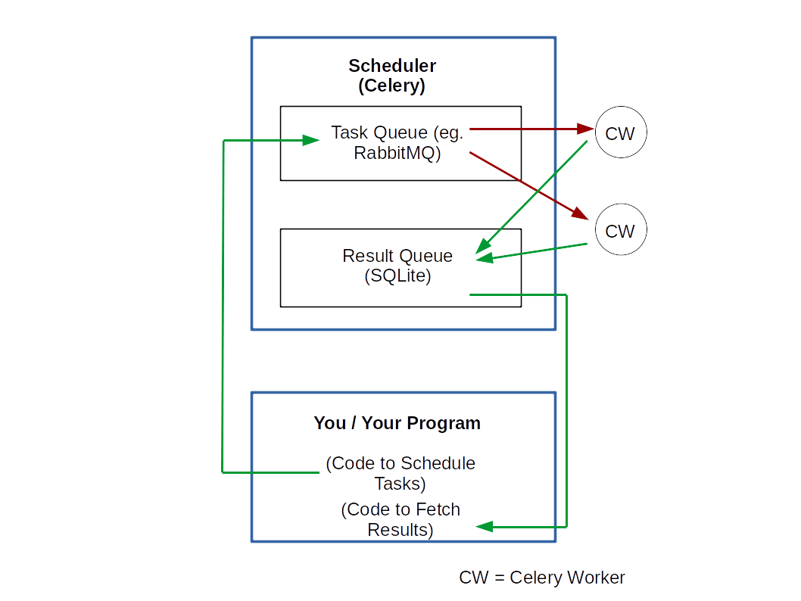

Consider a scenario that arises in the design of a typical web application. What happens?
Now, suppose that the function does something really complex. So, the amount of time it takes can be very high. But until that function executes, there will not be any HTTP response. And without an HTTP response, the HTTP client is not free to do the next job (unless it doesn't care as an AJAX call wouldn't). How to handle this situation?
We clearly need a modified workflow. Assuming that the 'thing' that the function is going to do is not going to contribute to the response it has to eventually return to the HTTP client, we can think of the following workflow.
In the second flow, there is a subtle change. Instead of actually doing the thing and waiting for it be completed, we are scheduling it! So, we don't wait for it to finish execution and directly return a response to the HTTP client. This way, the HTTP client does not end up waiting for too long.
Consider a different scenario now. You have just finished writing a complex program that performs analytics in a distributed manner across several nodes. For some reason, you could not frame your problem efficiently in one of those out-of-the-box distributed computing systems available today and so decided to roll out your own implementation. It works really well! But now you want to allow people to use it through some interface.
As the number of users increase, you find that your program gets overloaded and crashes. What would be great is if you had a system that queues up your requests and only allows them to be executed in a controlled manner. This ensures that too many parallel processes don't end up overburdening your system.
What is common to both the scenarios described above?
In other words, you need a task queuing system! And that is exactly what Celery is! Having motivated the kind of problems Celery can solve, let us now explore the architecture of Celery in some detail.
At the bare minimum level, Celery is made up of the following two components.
A task queue, as the name implies, is something that can maintain a queue of all the tasks along with some metadata about each task such as priority, arguments, etc. And someone has to do these tasks, right? That's the Celery worker. A Celery worker is a process that can read a task off the task queue and perform it.
Now, your tasks can be of two types
If your tasks are like the first, well and good! The two components of a Celery system, described above, are all you need. But if you need to store and track the results of the tasks, you need a third component. So, let's add it to our list.
And the following diagram essentially summarizes how these three components work together. In words, here is what happens.

Celery
Instead, it gives you a choice among the following to use as a task queue or a result queue. For a task queue, you can use
For the result queue, you can use
Please see the offical documentation for a more comprehensive list.
So, you get to choose according to your preferences, what Celery will use for a task and/or a result queue.
Do you think your Task Queue itself will be so loaded that you may want to place it on a separate physical or cloud server? Sure, keep it separate then! Do you think your architecture can benefit from keeping the result queue on a separate server, which is perhaps on the same network as some service which will use these results for further downstream analysis? No problem, separate it out! Or for now, it is just okay if everything sits on the same server? No problem!
Now, remember that the Celery Worker is responsible for communicating with the task queue and taking its work. It is worth noting that the Queue does not find the worker and gives it work - it is the worker which finds the Queue and takes the work! And this makes a ton of difference. A worker is nothing but a process that is designed to monitor the queue and pop off a task from it when available. So, if you have one worker, tasks will be get executed serially.
But you can spawn another worker without having to meddle or play with the task queue and now you have two workers popping off tasks two at a time and executing them. Since the queue itself does not need to know the details of the workers, you can start as many workers as you want and on any machine you want - so long as the worker has knowledge of and access to the task queue (and the result queue).
I have deliberately avoided writing any code here. The Celery documentation does a superb job in terms of helping you with the code and quite frankly, I don't see a better way explaining the implementation of a basic Celery code than what has already been covered here. So, I strongly urge you to check out the original documentation to start using Celery.